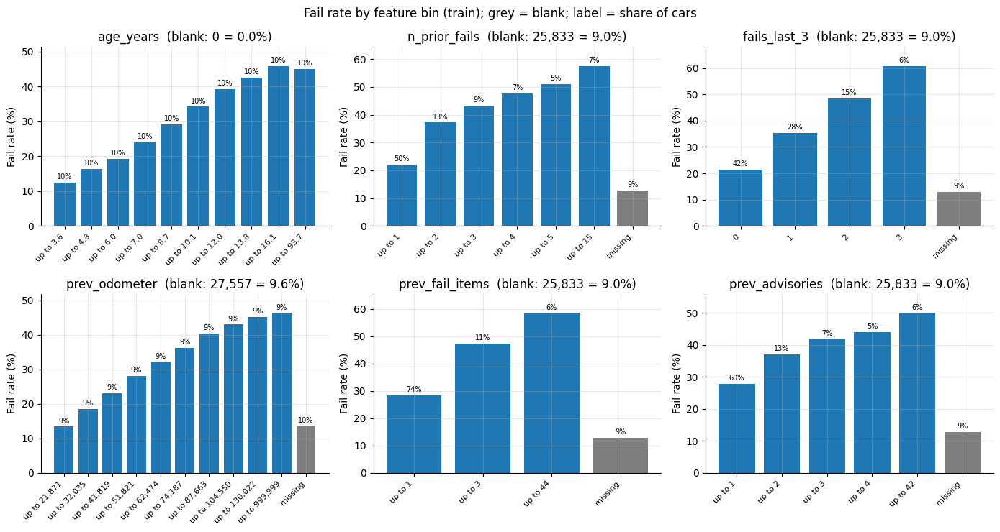
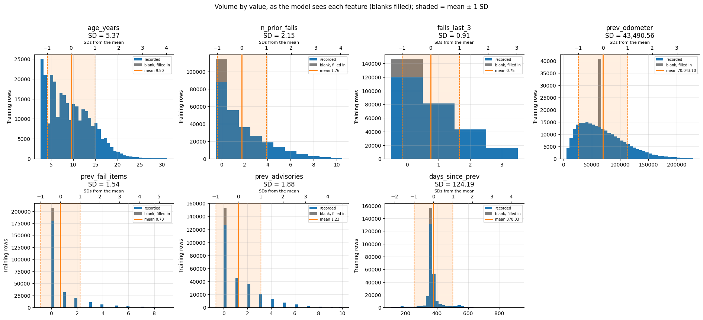

How the MOT failure model works
Enter a registration on Check your car and the site estimates how likely the car is to fail its next MOT. This page explains what that estimate is based on, how it was tested, and where it falls short.
Check your carAt a glance
What it predicts
The chance that a car or light van fails its next MOT, using only what is known before that test.
You see the result two ways. The headline compares the car with others of the same age, which places your car in one of three risk bands: Lower risk, Typical or Higher risk. Underneath is the estimated chance of failing, as a percentage.
Each fact on its own
Before building the model, each fact was checked on its own: does the fail rate rise with it? Each panel splits the training cars into groups by one fact and shows how often each group failed its next MOT.


What it looks at
Eight features, all taken from the car's public MOT record:
| Fact | Why it matters | Coefficient log-odds, per SD |
Odds ratio × odds, per SD |
|---|---|---|---|
| Failed MOTs in the last three years | The strongest signal: recent trouble tends to continue | +0.235 | × 1.26 |
| Mileage at its last MOT | More miles, more wear | +0.192 | × 1.21 |
| Failed MOTs in its whole history | A long-term track record, weighted less than recent fails | +0.146 | × 1.16 |
| Advisories at its last MOT | Warnings about parts that are wearing out | +0.137 | × 1.15 |
| Faults that failed it last time | A heavy fail suggests a car in worse shape | +0.100 | × 1.10 |
| Age at the next MOT | Cars wear with age | +0.096 | × 1.10 |
| Time since its last MOT | A long gap can mean a car that was off the road | +0.051 | × 1.05 |
| Make | Some makes fail more often than others of the same age and history | −0.193 (Audi) to +0.438 (Renault) per make, vs all other makes | × 0.82 to × 1.55 per make, vs all other makes |
How it learned
The data
The model was built from a sample of the DVSA's MOT records: 93,040 cars and vans and 495,116 MOTs between May 2018 and February 2026. Motorcycles were left out, as they fail for different reasons.
Learning from the past, tested on the future
The model learned from MOTs up to the end of 2022. It was then tested on 141,791 MOTs from 2024 to 2026 that it had never seen, in a single final check made after every design decision. That mirrors how the site is used: a model built on the past, predicting MOTs that haven't happened yet.
Cleaning up the records
Real records are messy. Retests a few days after a fail were counted once, not twice; mileage in kilometres was converted; unreadable odometers were handled separately; and the 2018 change to MOT rules meant only tests under the current rules are predicted.
How well it works
Ranking cars by risk
Pick one car that failed and one that passed: about 70% of the time, the model gave the failing car the higher score. Age alone manages about 65%. That's a real improvement, though not a crystal ball: many fails come from faults that appear suddenly.
Getting the percentages right
On the test MOTs, the model predicted an average fail rate of 28.9%; the real rate was 28.4%. Across every range of predictions, it stayed within a few points of reality.
The risk bands
How often cars in each band actually failed, on the test MOTs:
Higher-risk cars failed more than twice as often as lower-risk ones. But note that most higher-risk cars still passed: the band says a car is riskier than others like it, not that it will fail.
Consistent across cars
It was checked separately for every common make, each fuel type, each age group, and for first MOTs against cars with history: 36 groups in all, and it met the standard in every one.
What it says about makes
Compared with cars of the same age, mileage and MOT history, some makes fail more often than others. Among the 20 most common makes:
- Higher risk: Renault, Citroën, Peugeot and Vauxhall carry the highest odds of failing.
- Lower risk: Audi, Land Rover, BMW and Mercedes-Benz carry the lowest.
This isn't a verdict on how well the cars are built. Owners of premium makes are more likely to have their cars serviced before the MOT, and the MOT doesn't test things like engines or gearboxes, so a car can pass easily and still be unreliable.
What it can't do
- Predict sudden faults, like a blown bulb, a damaged tyre or a stone chip.
- See the car's current mileage: it uses the reading from the last MOT.
- Spot mileage that's been wound back, if it still looks higher than last time.
- Judge classic cars well: very old cars tested occasionally don't behave like everyday cars.
- Replace an inspection. It's an estimate for interest, not advice.
How it runs on this site
When you enter a registration, the site fetches that car's MOT history live from the DVSA, works out the eight facts using exactly the same rules the model was built with, and returns the result. The live version was checked against the original on 50 real cars and gave identical answers for every one.
Registrations are looked up as you check them. Basic technical logs are kept for a few days so faults can be fixed; nothing is used to identify you.
Keeping it honest
Cars and MOT results change over time, and fail rates have been falling. As new MOT results are published, the model's past predictions can be checked against what actually happened, and it will be recalibrated or retrained when it drifts.